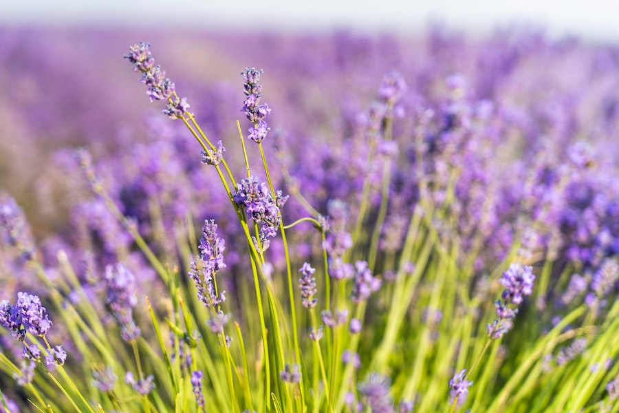
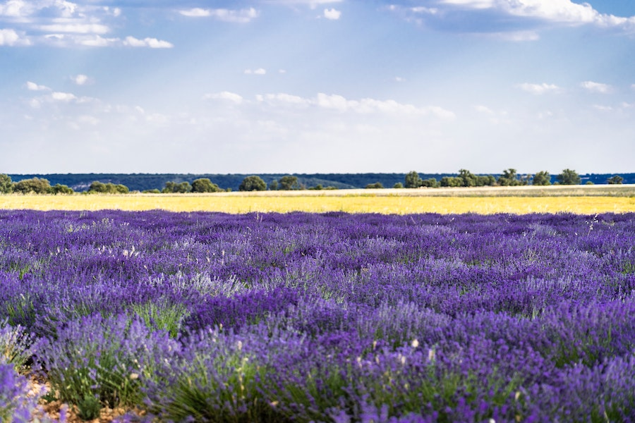
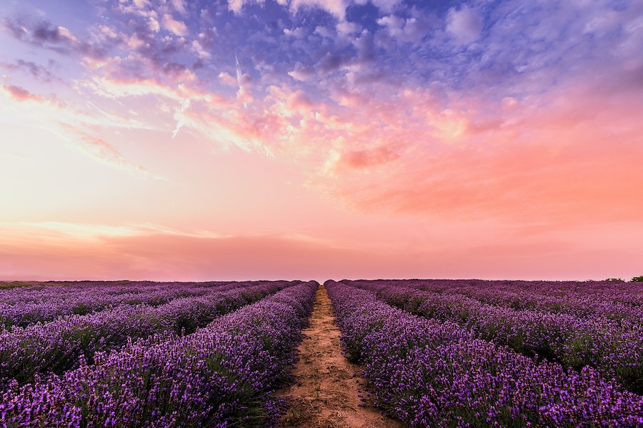

Imagens




A lavanda é nativa das regiões do Mediterrâneo, mas é cultivada em todo o mundo, especialmente em climas de verão quente e solo bem drenado.
A lavanda é uma planta perene que possui folhas estreitas e longas, geralmente de cor cinza-esverdeada. Suas flores são pequenas e reunidas em espigas, variando em cores, desde o lilás claro até o violeta intenso.
A fragrância da lavanda é caracterizada por notas florais, herbais e levemente adocicadas. É usada em perfumes, óleos essenciais, sachês e produtos de cuidados pessoais.
A lavanda é conhecida por suas propriedades calmantes e relaxantes. O óleo essencial de lavanda é frequentemente utilizado para aliviar o estresse, a ansiedade e promover o sono tranquilo.
As flores de lavanda também podem ser usadas na culinária, adicionando um toque sutil de sabor floral a pratos doces e salgados. É comum encontrar lavanda em bolos, biscoitos, sorvetes e infusões de chá.
A lavanda é um ingrediente popular em produtos de cuidados com a pele, como loções, sabonetes e xampus, devido às suas propriedades suavizantes e relaxantes.
A lavanda é uma planta de baixa manutenção que prospera em sol pleno e solo bem drenado. Ela é resistente à seca e é uma escolha popular para jardins xeriscape.
As flores de lavanda atraem polinizadores, como abelhas e borboletas, tornando-a uma planta benéfica para os ecossistemas locais.
Existem várias espécies e variedades de lavanda, incluindo a Lavandula angustifolia (lavanda verdadeira), Lavandula stoechas (lavanda espanhola) e Lavandula x intermedia (lavandin), cada uma com suas características únicas.
A lavanda tem uma longa história de uso em rituais e práticas espirituais. Também é um símbolo de pureza, amor e tranquilidade.
A fragrância de lavanda também é usada como repelente natural de insetos, ajudando a afastar mosquitos e outros insetos voadores.
As flores de lavanda são colhidas quando estão em plena floração. Elas são frequentemente secas e usadas em arranjos secos, sachês e decorações.
O óleo essencial de lavanda é amplamente utilizado na aromaterapia e em produtos de cuidados pessoais. É conhecido por seus benefícios relaxantes e terapêuticos.
O óleo essencial puro de lavanda pode variar de R$ 30 a R$ 100 por frasco, dependendo do tamanho (geralmente 10ml a 30ml) e da marca. Marcas renomadas costumam ter preços mais elevados.
Sabonetes, loções, cremes e outros produtos de cuidados com a pele com fragrância de lavanda podem variar de R$ 10 a R$ 50 ou mais, dependendo da marca e do tamanho do produto.
Sachês de lavanda para aromatização de roupas e armários podem custar entre R$ 5 e R$ 20, dependendo do tamanho e da qualidade.
Buquês de lavanda fresca ou arranjos secos podem variar de R$ 20 a R$ 100 ou mais, dependendo do tamanho e da quantidade de flores.
Produtos de aromaterapia, como difusores de óleo essencial de lavanda, podem variar de R$ 50 a R$ 200 ou mais, dependendo da marca e das funcionalidades.
Produtos alimentícios com sabor de lavanda, como chás e doces, podem variar de R$ 10 a R$ 30, dependendo do tipo e da quantidade.
Plantas de lavanda em vasos podem custar de R$ 20 a R$ 50, dependendo do tamanho e da qualidade da planta.
Produtos artesanais feitos com lavanda, como velas e sabonetes caseiros, podem variar amplamente em preço, dependendo do artesão e da qualidade.
Óleos de massagem com fragrância de lavanda podem variar de R$ 20 a R$ 80, dependendo do tamanho e da qualidade do óleo.
Sprays de lavanda para refrescar o ambiente podem variar de R$ 15 a R$ 40, dependendo do tamanho e da marca.